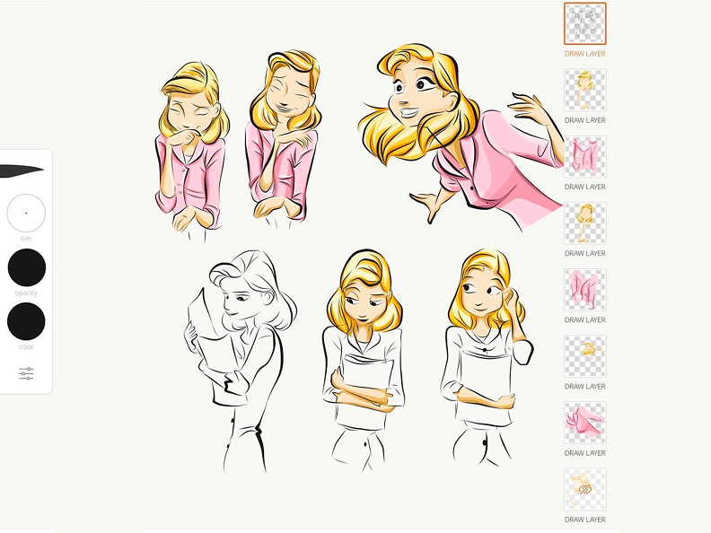
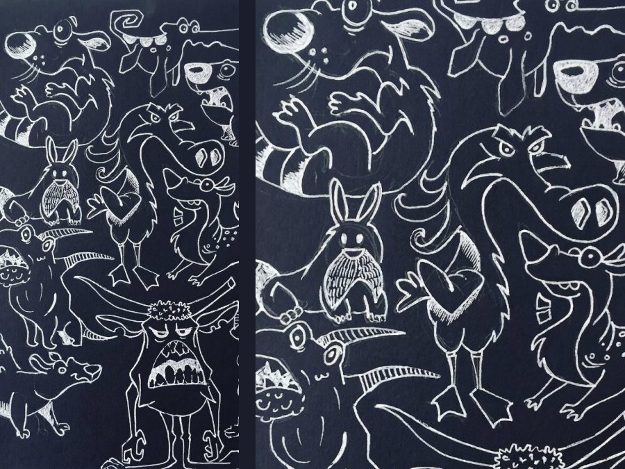
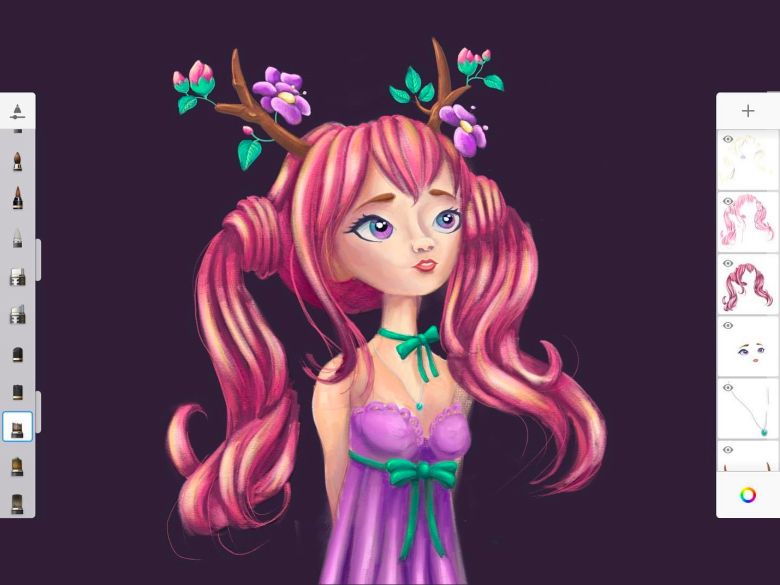

About
Product designer.
Fine artist.Akita-Inu trainer.
I am Anna, a product designer based in Ukraine. I create clarity from complexity.
My most recent work stint was with DataRobot, where I led product design for Workload API, a feature enabling teams to deploy, monitor and manage customer code at scale. Being part of the design team for almost 7 years in this young, rapidly growing enterprise startup taught me how to balance business goals and engineering constraints as I unrelentingly advocated for the user.
Principles
What I hold on to.
01
Clarity from complexity
Complex systems deserve simple surfaces. If a screen needs a manual, it needs another pass.
02
Always the user’s advocate
Business goals and engineering limits are real. So are the people who have to use the result.
03
Systems over screens
Good tokens and components let every team, and every AI tool, build the right thing.
04
Test before you build
A prototype in front of real users is cheaper than a release in front of all of them.
Toolkit
What I bring to a team.
- Product discovery
- Problem framing
- Success metrics
- Stakeholder alignment
- Roadmap input
- User flows
- Information architecture
- Interaction design
- Visual design
- Prototyping
- Design tokens
- Component libraries
- Light and dark modes
- Documentation
- WCAG 2.1 accessibility
- Agentic AI platforms
- ML and data tools
- AI-ready design systems
- Designing with Claude
- Prototyping with Claude Design
- Figma
- Claude
- Claude Code
- Claude Design
- Figma variables
-
Mar 2020 to Sep 2026
Product Designer · DataRobot
Enterprise AI platform. Led the design of Workload API end to end, owned the design system (60+ components, light and dark themes) and ran accessibility checks across the platform.
6.5 years
-
2013 to 2020
Earlier
- intellias
- syngenta
- Innovecs
- BidOn Games
7 years
-
2015
Fine Art degree
The Bohdan Khmelnytsky National University of Cherkasy
Off the clock
I still draw by hand.
I’m an owner of a wonderful Akita-inu dog, working and training her with pleasure, teaching her how to be friends with cats and everything around. I enjoy meditation and self-organization techniques that help me stay grounded and focused. And I’m an artistic type of person: in my spare time I enjoy drawing.



Available now